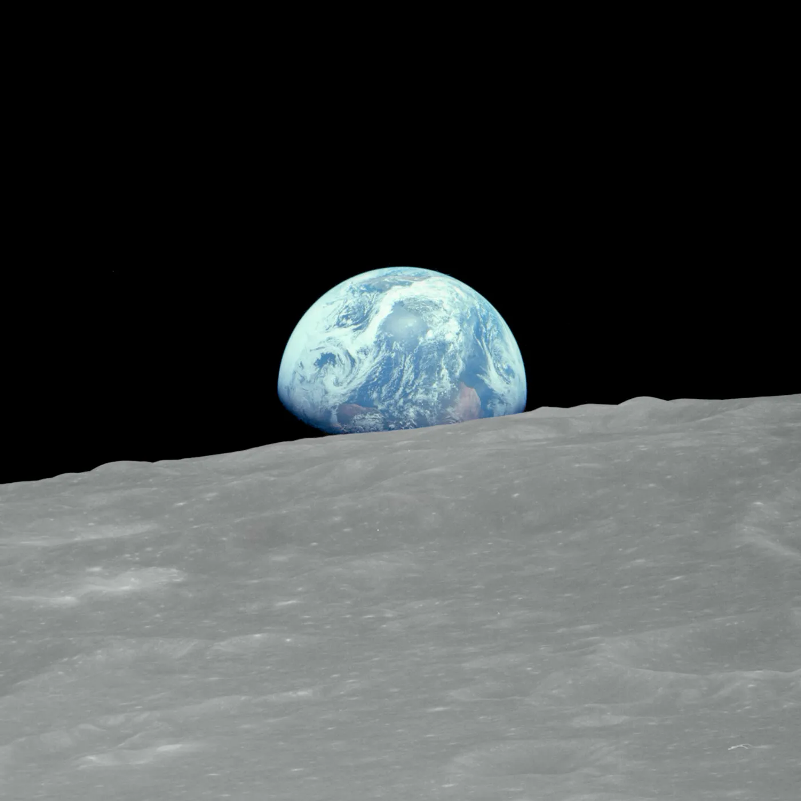
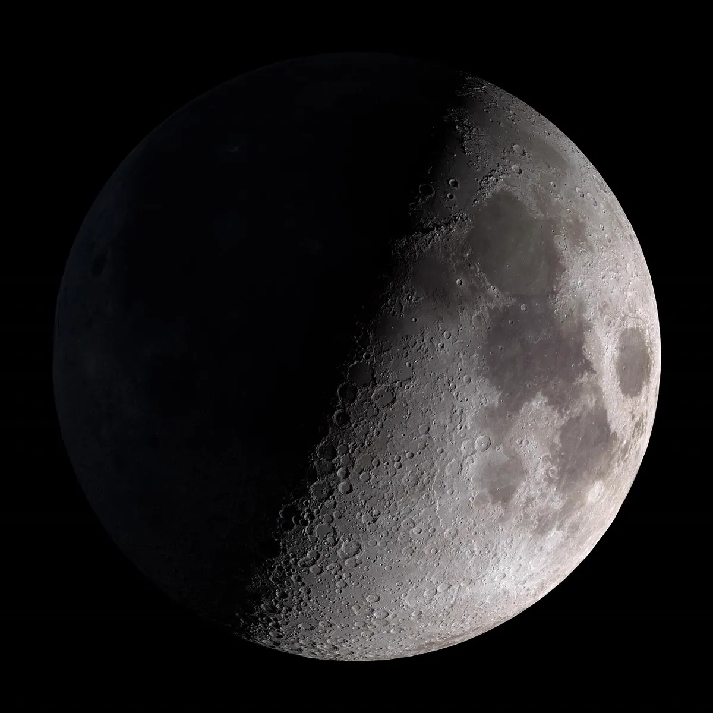

Saga
The everyday model. Fast, conversational, and the one you're talking to in chat.
- Best for
- Chat, writing, quick answers
- Status
- Available
Small models from Labs21. Ask Saga anything.
A cinematic journey past the solar limb, Earth, and Moon, ending with Earth above Lumen 1.9.
A small model built to keep going when the question gets difficult. It's tuned to keep reasoning through long, awkward problems instead of stopping at the first plausible answer.

Scaling to 1B Parameters Polaris has scaled to 1 billion parameters, up from 500M, for broader knowledge and stronger reasoning.
Bounded Dynamic Highway A looped network that replaces attention, RoPE and large KV caches with bounded hidden dynamics.The everyday model. Fast, conversational, and the one you're talking to in chat.
The persistent one. Slower, and built to stay with hard, multi-step problems.
Saga is moving to a looped network that replaces attention, RoPE, and large KV caches with bounded hidden dynamics. Each block keeps four recent hidden states, mixes them across grouped temporal branches, then repeats the same physical depth.
It's all built and trained on one RTX 5080. The aim is simple: keep making these models more useful, and make them affordable to run.